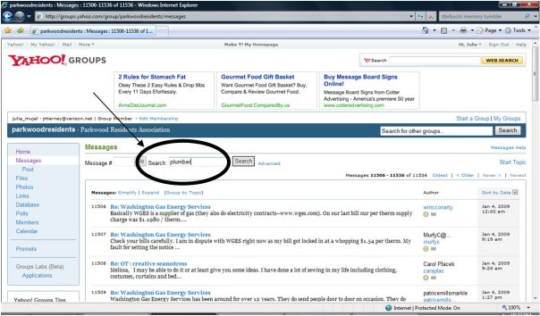

PARKWOOD RESIDENTS ASSOCIATION
WINTER 2008-2009 NEWSLETTER
Next Meeting:
Tuesday, January 27, 2009 at 7:30
Kensington Parkwood Elementary School
|
Neighbors and Friends, At this writing, the holidays have come and gone and I trust your celebrations were spirited and full of the joy of the season. The days have begun to lengthen and we swear in a new administration in less than three weeks. Happy New Year to all! The next meeting of the Parkwood Residents Association will take place on Tuesday, January 27th, at 7:30 p.m., in the multi-use room (aka the cafeteria), on the lower level at Kensington Parkwood Elementary. Among the topics on the agenda, we’ll have a presentation by some local realtors to give us a better idea of the dynamics at work in the area’s real estate market and a presentation by David Hauck of the Montgomery County Sierra Club on energy efficiency measures that can be adopted by homeowners. It’s also the time of year when Parkwood volunteers put together and distribute Operation Envelope, an annual membership drive to increase the number of dues-paying residents in the PRA. The mailing also provides the option to make a special contribution to the Beautification Committee. We know that times are tough for many, but annual dues are only $10.00, and whatever you can spare for beautification goes to improve the community’s aesthetics. Thanks in advance for helping to support the work of Parkwood’s volunteers. As 2008 closes and 2009 stretches out before us, Parkwood has addressed a number of hurdles, completed several projects and will need to remain attentive to overcome future challenges. The PRA listserv continues to provide a valuable forum for the exchange of information and users should remember to always be civil in their discourse. The PRA web site does an outstanding job maintaining a gateway to Parkwood and the surrounding area. All of these services are made possible by volunteers. I must admit that I’ve been remiss in posting letters to the listserv that can be used to write our elected officials regarding the coming changes that we will face with the construction at Bethesda Naval. I will strive to have them done in the opening weeks of the new year. Make sure you sign up for the listserv at parkwoodresidents@yahoogroups.com and go by the web site at www.parkwoodresidents.org for more information. I wish everyone good health, prosperity and happiness in the coming year and look forward to seeing you at upcoming PRA meetings.
Sincerely, |
RECONSTRUCTION OF CEDAR LANE BRIDGE
On November 20, 2008 Montgomery County officials met with residents at Kensington-Parkwood Elementary School to present their plans for reconstruction of the bridge that crosses Rock Creek on Cedar Lane. The bridge was built in 1959, resurfaced in 1996, and now has only approximately 5 years of service life due to deterioration of understructure. Construction costs would be paid with Federal funds, while planning and design would be from local funds.
The new bridge is to be the same height and the travel lanes will be the same width, but the sidewalks will be increased from 5 feet to 5 feet 8 inches. The County is aware that Beach Drive upstream of the bridge is flooded in heavy storms, partially due to debris getting caught under the bridge. However, it is not possible for the new bridge to be built higher because of proximity to the Beltway underpass. The County did say that they should do a better job of clearing debris during storms.
The bridge is now restricted for trucks above a certain weight. The new bridge would not have such restrictions because it would be constructed to a higher standard mandated by the Federal Government. Two alternatives for construction were presented. Each one would cause considerable inconvenience to Parkwood residents. They are as follows:
1. Phased construction This would entail closing half the bridge. One lane in each direction would remain open. This option was presented as possibly resulting in more environmental damage to Rock Creek due to the need to build additional infrastructure to support the bridge during construction, since the present bridge would be cut in half. This option may also have safety issues related to necessarily tight turns made from Beach Dr. into the much narrower Cedar Lane. Construction would take 12-15 months and cost $2.7 million.
2. Road closure If the road is closed, construction could be completed in 3 months. Construction cost would be $2.1 million. If this option is used, a temporary pedestrian/bike bridge would be built to allow access across the creek.
A traffic study is scheduled to be completed in February 2009, final design in Spring of 2010, and construction to begin in the Fall of 2010.
During the question and answer period, it was apparent that most people at the meeting preferred the closure option to get it done quickly. It was suggested that this would most efficiently be done in the summer when traffic is lighter. It would be impossible for the County to begin the project in the Summer of 2010, so that would push construction to the Summer of 2011. Residents pointed out that it would be good to get construction done before BRAC is finished, and additional traffic begins to use Cedar Lane, which is scheduled for 2011.
The County representatives seemed surprised that there was a bus route on Cedar Lane that had to be taken into consideration. Thus, they had no plans to present about bus rerouting if the closure option were to be chosen. Parkwood resident Tom Robertson has suggested that rather than rerouting the bus, riders might be able to use the footbridge to connect to the two parts of the bus route interrupted by the bridge closure option. Residents also wanted to be sure that we could maintain restriction of truck traffic on Cedar Lane. After a description of the meeting appeared on the list, the issue of an increase in cut-through traffic in Parkwood - and whether we could/should petition the county to limit access to Parkwood during rush hour – was raised.
Information about the project will be posted at http://www.montgomerycountymd.gov/content/dot/dcd/index.asp.
Kira Lueders attended the meeting on behalf of the PRA and provided the summary above.
BRAC UPDATE
On November 20, 2008, four representatives of the Coalition of Military Medical Center Neighbors (CMMCN), to which PRA belongs, presented testimony to the Montgomery County Delegation of the Maryland State Assembly. Bailey Condrey, President of PRA, was one of the individuals who delivered remarks, focusing his testimony on Multi-modal transit options, specifically the need to improve bike and pedestrian access to the New Walter Reed. Other remarks spoke to the need to improve infrastructure surrounding the Naval Hospital, including intersections at Jones Bridge Road, Connecticut Avenue, Cedar Lane, and Wisconsin Avenue. Speakers emphasized the need to prioritize such improvements now in order to provide patients at Walter Reed with access to the facility and maintain the quality of life and economic vitality of the surrounding area.
In addition, on November 18, 2008, Ilaya Rome Hopkins, Chair of the CMMCN, presented testimony, on behalf of the Coalition, to the Montgomery County Council. Her testimony emphasized the goal of the CMMCN to make the BRAC-mandated expansion at the new Walter Reed work by designing and funding necessary and appropriate improvements to the transportation and transit infrastructure and maintaining open and transparent communication. Her testimony focused on the priorities of the coalition, which are as follows:
* * * * * *
Have a New Neighbor?
The PRA is looking for ways to reach out to newcomers in the neighborhood. If you have a new neighbor (or recently moved to the neighborhood yourself), please contact Welcome Committee Chair Kathy Byars to have Kathy or one of her volunteers drop off a PRA welcome packet. Contact Kathy at (301) 530-9441 or send an email to: kathybyars@mris.com.
|
Parkwood Resident's Association Officers:
President: Bailey Condrey, Jr; 571-213-2729 Cell;
|
PARKWOOD’S VIRTUAL COMMUNITY
Come join Parkwood’s “other” community! Get connected to your neighbors on the PRA’s website at www.parkwoodresidents.org and the PRA e-mail group (listserv) on Yahoo! Groups.
Maintained by PRA webmaster Peter Mansbach, the PRA website includes a wealth of information about our community and the PRA, including contact information for local officials, minutes from past PRA meetings, past issues of the newsletter, maps of recent crimes in the community, and other great resources.
Almost half of Parkwood households are connected to each other via the PRA listserv. This e-mail group is open to all residents of Parkwood, and a great way to plan community events, such as block parties and playgroups, and share information, such as the latest news affecting our neighborhood or referrals for service providers.
A hint for our rookies, and a reminder for our listserv veterans: All of the Parkwood listserv messages are archived on the Yahoo! servers. Any listserv subscribers can access the archives on the Yahoo! Groups website at http://groups.yahoo.com/group/parkwoodresidents/. This frees you from having to save old listserv messages, and allows you to research anything sent to the listserv since its inception in 2002. For example, if you wanted to see what plumbers have been recommended by your neighbors, you can find this in the archives. From the Yahoo! Groups website, click on Messages on the left hand side of the page. Next, enter “plumber” in the Search box.

The PRA listserv saves the PRA funds, gives busy neighbors a way to stay in touch, and makes Parkwood a safer place to live! Sign on to the listserv and get your neighbor to as well! To subscribe to the listserv, send a blank message to: parkwoodresidents-subscribe@yahoogroups.com. You will receive a confirmation message when you are subscribed. Do not write anything in the subject or body of the message. It will not be seen by anyone and you will not get a response.
Connect with your neighbors at www.parkwoodresidents.org and ParkwoodResidents@yahoogroups.com
| [Parkwood Home] | [Printable Page] | [Print] |